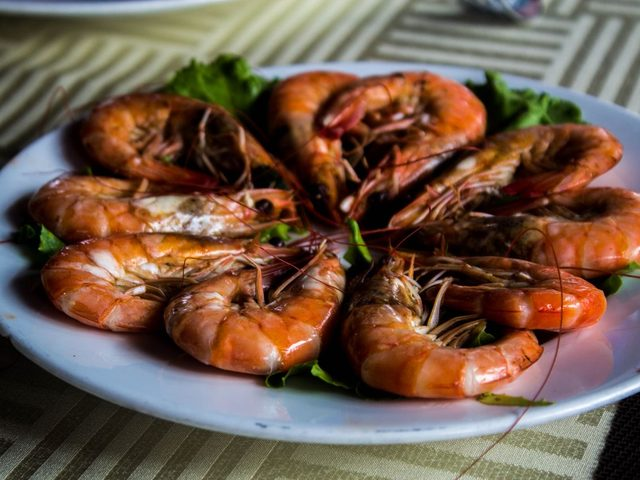
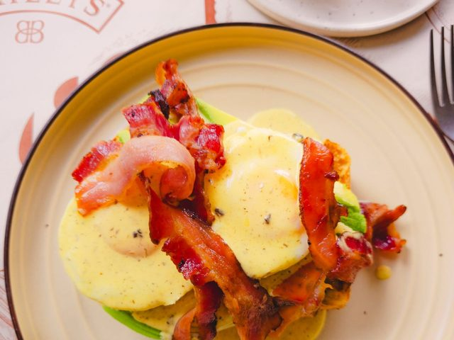
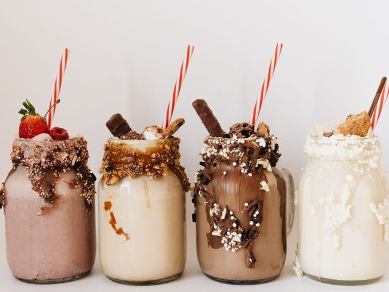
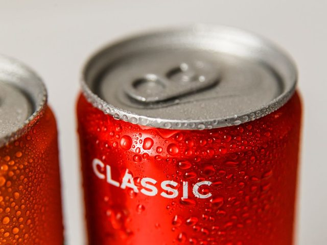
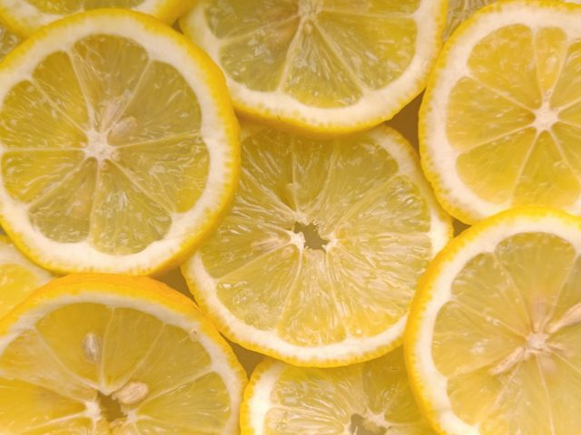
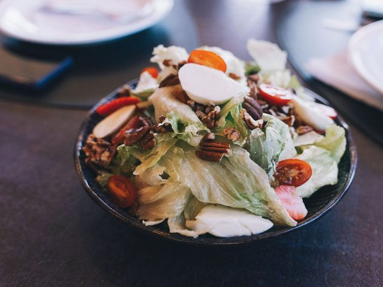
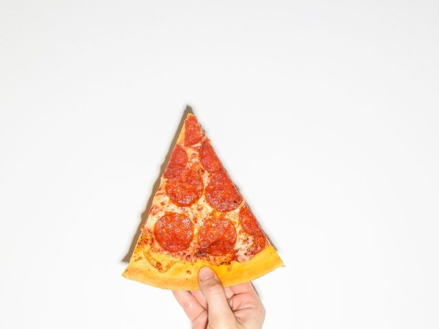

VOCABULARY · 主題 2000 字 PART 2 UNIT 10
Food & drink．食物和飲料
水果、蔬菜、主食、飲料、甜點、調味料和味道，共 41 個。很多食物名詞不可數（seafood、flour、jam），要用 some 或 a piece of。
共 41 個單字．點 🔊 聽發音

1mangon.
芒果
複數 mangoes
Taiwan mangoes are sweet and juicy.台灣芒果又甜又多汁。

2pineapplen.
鳳梨
pine + apple
Pineapple cakes are a famous gift from Taiwan.鳳梨酥是台灣有名的伴手禮。

3tangerinen.
橘子
比 orange 小、好剝皮
People give tangerines to friends at Chinese New Year.過年時大家會送朋友橘子。

4cabbagen.
高麗菜；甘藍菜
常當不可數
Mom makes dumplings with cabbage and pork.媽媽用高麗菜和豬肉包水餃。

5carrotn.
胡蘿蔔
carrot cake 胡蘿蔔蛋糕
Rabbits love to eat carrots.兔子喜歡吃胡蘿蔔。

6cornn.
玉米
不可數
We had grilled corn at the night market.我們在夜市吃了烤玉米。

7lettucen.
萵苣；生菜
常當不可數
Put some lettuce and tomato in the sandwich.在三明治裡放一些生菜和番茄。

8nutn.
堅果；核果
口語 He's nuts. 他瘋了
Squirrels hide nuts for the winter.松鼠把堅果藏起來過冬。

9onionn.
洋蔥
切洋蔥會流眼淚
Cutting onions makes me cry.切洋蔥讓我流眼淚。

10potaton.
馬鈴薯
複數 potatoes
French fries are made from potatoes.薯條是用馬鈴薯做的。

11cerealn.
穀片；穀類
a bowl of cereal 一碗穀片
I have a bowl of cereal with milk every morning.我每天早上吃一碗加牛奶的穀片。

12dumplingn.
水餃；餃子；湯圓
rice dumpling 粽子
We eat rice dumplings at the Dragon Boat Festival.我們在端午節吃粽子。

13fast foodn.
速食
不可數
Fast food is quick, but it isn't healthy.速食很快，但不健康。
14flourn.
麵粉
不可數；和 flower 同音
You need flour, eggs, and milk to make a cake.做蛋糕需要麵粉、蛋和牛奶。

15instant noodlesn.
泡麵；速食麵
instant 立即的
Instant noodles are ready in three minutes.泡麵三分鐘就好了。

16seafoodn.
海鮮
不可數
Penghu is famous for fresh seafood.澎湖以新鮮海鮮聞名。

17shrimpn.
蝦子；蝦仁
複數 shrimp 或 shrimps
I'd like fried rice with shrimp, please.我要一份蝦仁炒飯。

18spaghettin.
義大利麵
不可數
Spaghetti with tomato sauce is my favorite.番茄醬汁義大利麵是我的最愛。

19tofun.
豆腐
不可數；stinky tofu 臭豆腐
Stinky tofu smells bad but tastes good.臭豆腐聞起來臭，吃起來香。

20brunchn.
早午餐
breakfast + lunch
We often have brunch at a café on Sundays.我們星期天常去咖啡館吃早午餐。

21suppern.
晚餐；宵夜
比 dinner 簡單、隨意
We had a light supper before bed.我們睡前吃了一頓簡單的晚餐。

22beern.
啤酒
不可數；未成年不能喝酒
Dad drinks a glass of beer after work.爸爸下班後喝一杯啤酒。

23colan.
可樂
= Coke
Too much cola is bad for your teeth.喝太多可樂對牙齒不好。

24liquidn.
液體
↔ solid 固體
You can't take liquids over 100 ml on a plane.超過 100 毫升的液體不能帶上飛機。

25milkshaken.
奶昔
milk + shake 搖
I'll have a chocolate milkshake, please.我要一杯巧克力奶昔。

26sodan.
汽水；蘇打水
soda water 蘇打水
Would you like some soda with your pizza?你吃披薩要配汽水嗎？

27soft drinkn.
不含酒精的飲料；汽水
↔ 含酒精的飲料
Only soft drinks are served at the school party.學校派對只供應不含酒精的飲料。

28dessertn.
甜點
注意和 desert（沙漠）只差一個 s
We had ice cream for dessert.我們吃冰淇淋當甜點。

29doughnutn.
甜甜圈
= donut
The police officer bought a doughnut and coffee.那位警察買了甜甜圈和咖啡。

30moon caken.
月餅
Moon Festival 中秋節
We eat moon cakes and watch the moon at the Moon Festival.中秋節我們吃月餅、賞月。

31ketchupn.
番茄醬
不可數
Do you want ketchup on your hot dog?你的熱狗要加番茄醬嗎？

32creamn.
奶油；鮮奶油；乳霜
ice cream 冰淇淋；hand cream 護手霜
Put some cream on top of the cake.在蛋糕上面加一些鮮奶油。

33jamn.
果醬；塞車
traffic jam 塞車
I like toast with strawberry jam.我喜歡吐司抹草莓果醬。

34peppern.
胡椒；甜椒
salt and pepper 鹽和胡椒
Add a little salt and pepper to the soup.在湯裡加一點鹽和胡椒。

35soy saucen.
醬油
不可數；soy 黃豆
Dip the dumplings in soy sauce.水餃沾醬油吃。
36vinegarn.
醋
不可數
Vinegar makes the soup a little sour.醋讓湯有點酸。

37bitteradj.
苦的
sweet 甜／sour 酸／bitter 苦／salty 鹹
This medicine tastes bitter.這個藥吃起來很苦。

38souradj.
酸的
sweet and sour pork 糖醋排骨
Lemons are very sour.檸檬非常酸。

39spreadv.
塗；抹；展開；散布
三態同形 spread
Spread some butter on the bread.在麵包上塗一些奶油。

40dietn.
飲食；節食
be on a diet 在節食
Mom is on a diet, so she doesn't eat dessert.媽媽在節食，所以不吃甜點。

41slicen.
片；薄片
a slice of bread 一片麵包
Can I have another slice of pizza?我可以再吃一片披薩嗎？
FOCUS
不可數的食物怎麼數
| 不可數名詞 | 單位 |
|---|---|
| bread | a slice of bread |
| cereal | a bowl of cereal |
| cola／soda | a can／glass of cola |
| flour | a bag of flour |
不可數名詞不加 -s，要用 a slice of、a bowl of、a glass of 等單位。
FOCUS
味道
| 味道 | 例子 |
|---|---|
| sweet 甜 | cake |
| sour 酸 | lemon、vinegar |
| bitter 苦 | black coffee、medicine |
| salty 鹹 | soy sauce |
說「嚐起來…」用 taste + 形容詞：This soup tastes sour.